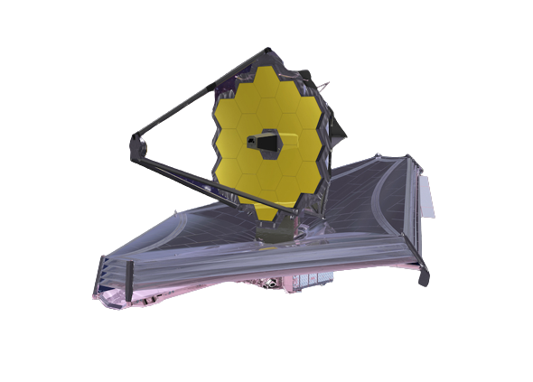

Launched in 2023, the James Webb Space Telescope embarks on a mission to unravel the universe's enigmas, opening new frontiers in our understanding of galaxies, stellar birth, and the potential for extraterrestrial existence.
The primary mirror of JWST is a segmented, gold-coated mirror composed of 18 hexagonal segments. It has a diameter of 6.5 meters, significantly larger than the Hubble Space Telescope's mirror. The primary mirror collects and focuses incoming light for analysis by the scientific instruments.
The secondary mirror is a smaller, curved mirror located above the primary mirror. Its purpose is to further direct and focus light onto the instruments. The secondary mirror is adjustable, allowing for precise alignment and control of the telescope's optics.
JWST features a five-layer sunshield that protects the telescope's delicate instruments from the Sun's heat and light. This sunshield is made of a specially designed material that reflects and dissipates the Sun's energy. It also helps to maintain the telescope at extremely low temperatures, essential for infrared observations.
The optical system of JWST includes the primary and secondary mirrors, as well as various other mirrors and lenses. These optical components work together to capture and manipulate incoming light, focusing it onto the scientific instruments.
Near-Infrared Camera (NIRCam):
NIRCam captures images in the near-infrared range. It supports both wide-field and coronagraphic imaging and plays a crucial role
in studying the early universe, distant galaxies, and exoplanets.
Near-Infrared Spectrograph (NIRSpec):
NIRSpec is a spectrograph that splits light into its component wavelengths for detailed analysis.
It enables the study of the chemical composition, temperature, and other properties of celestial objects,
including exoplanets and galaxies.
Mid-Infrared Instrument (MIRI):
MIRI operates in the mid-infrared range and includes imaging, coronagraphy, and spectroscopy capabilities. It provides insights
into the formation of stars, protoplanetary disks, and the characterization of exoplanet atmospheres.
Fine Guidance Sensor/Near Infrared Imager and Slitless Spectrograph (FGS/NIRISS):
FGS/NIRISS serves as both a fine guidance sensor for precise pointing and a scientific instrument. It includes a near-infrared
imager and a slitless spectrograph, enabling studies of exoplanets, the early universe, and more.
The spacecraft bus provides the structural support and functionality for the telescope and its instruments. It houses the communication systems, power systems, propulsion systems, and thermal control systems necessary for the operation and control of the telescope.
JWST relies on a communication system to transmit data and receive commands from Earth. It utilizes high-gain antennas to establish communication links with ground-based antennas, allowing scientists and engineers to control and receive data from the telescope.
This system is responsible for controlling the operations of the telescope and managing the data generated by the instruments. It handles commands, data storage, data processing, and data transmission functions.